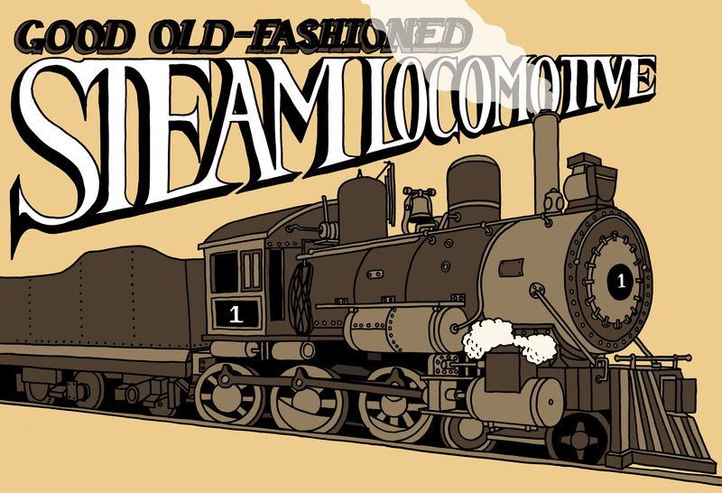

Figuur 1: Wanneer jy hout saag, maak jy ’n wederkerende beweging.Figuur 2: ’n Windpomp verander ’n rotasiebeweging in ’n weder- kerende beweging.

Figuur 3: ’n Stoomlokomotief gebruik ’n kruk-en-glyermeganisme om die wiele te laat draai.
As ’n kruk deel vorm van ’n
wenas verander dit ’n groot
rotasiebeweging met ’n klein
krag in ’n klein rotasiebeweging
met ’n groot krag. Hoe langer die
krukarm is, hoe meer meganiese
voordeel gee dit.
Figuur 4: ’n Eenvoudige handaangedrewe wenas wat
gebruik word om ’n emmer water op te trek
Glyer
word met behulp van ’n
verbindingstang
aan die kruk vasgeheg. Die glyer is
gewoonlik rond en pas in ’n ronde gat. Dit kan slegs sywaarts beweeg en nie op
of
af nie.
spil
tussen die kruk en die verbindingstang en nog ’n
spiltussen
die verbindingstang en die glyer. Albei die spille verander van posisie as die
meganisme besig is om te werk. Die kruk draai om die
as.Die as verander nooit
van posisie nie, dit draai net.
wiel
vasgeheg word, om die wiel daarmee saam te laat draai,
of die kruk kan deel van die wiel wees.
Die manier waarop die kruk werk, hang slegs af van
die afstand tussen die middelpunt van die as en
die middelpunt van die spil tussen die kruk en die
stootstang. Hierdie afstand word die
krukslag
genoem.
Dit word in figuur 5 aangedui.
Figuur 5: Die verskillende onderdele van ’n
kruk-en-glyermeganisme
Figuur 6: Verskillende stappe gedurende die
werking van ’n kruk-en-glyermeganisme
Hoe lank is
die krukslag in die meganisme
in figuur 6?
Hoe ver is die
beweging van die glyer van
die verste posisie aan die linkerkant tot
by die verste posisie aan die regterkant?
Dit kan ook die “volledige sywaartse
beweging” genoem word.
As die
krukslag twee maal so lank
was, hoe lank sou die totale sywaartse
beweging van die glyer wees?
Sal die glyer ooit stil staan as die kruk
besig is om te roteer?
hoë druk.
Verbeel jou jy blaas ’n ballon
op. Jy moet ’n hoë lugdruk in jou mond
opwerk om die ballon groter op te blaas. Die
ballon word groter, want die hoër druk van
die lug laat die sye van die ballon uitwaarts
beweeg. Stoom teen ’n hoë druk kan ook
dinge beweeg.
Figuur 7suier
genoem,
en die gat waarbinne die suier beweeg word
die
silinder
genoem.
kleppe
om die warm
stoom links of regs van die silinder in te laat.
Die kleppe moet op die regte tye oopmaak en
toemaak. Is daar ’n meganisme wat dit kan
regkry? Daarvan gaan julle in die volgende les
leer.
Figuur 8: Die werking van ’n stoomenjin
’n Glyermeganisme kan gebruik word om
rotasiebeweging in wederkerige beweging te
verander, of dit kan gebruik word om wederkerige
beweging in rotasiebeweging te verander. Met ander
woorde, as jy die kruk beweeg, sal die glyer ook
beweeg. En beweeg jy die glyer, sal die kruk ook
beweeg.
Nok
is ’n wiel wat nie rond is nie, of dit is ’n ronde wiel wat om ’n as draai
wat
nie die middelpunt van die wiel is nie.
volger
gebruik. Die rotasiebeweging van die nok word
verander na die wederkerende beweging van die volger. Die volger is in ’n
huls,
sodat dit slegs in een rigting kan beweeg.
as aangedryf,
sodat die nok roteer wanneer die as roteer. As die nok roteer, gly die
volger op die nok. Die posisie van die volger hang af van die hoek waarteen die
nok roteer word.
Onthou julle die verskil tussen ’n
gedrewe wiel en ’n vry-draaiende wiel waaroor ons julle in die vorige hoofstuk
geleer het?
Figuur 9: Die verskillende onderdele van ’n
kruk-en-glyermeganisme en verskillende nokvorms
Figuur 10:
Die beweging van
’n klep soos die
nok roteer
Rotasie van
nok
Beginposisie
1 agste van ’n
nokrotasie
2 agstes van
’n nokrotasie
3 agstes van ’n
nokrotasie
Rotasie van
nok in grade
0°
45°
90°
135°
Afstand
waarmee klep
oop is
0
2 mm
Voltooi die tabel hierbo om te wys
hoe ver oop die klep is by die verskillende
posisies van die nok in figuur 10. Meet die afstand waarmee die klep oop is.
Watter van die prente hierbo wys
die klep in sy hoogste posisie?
Watter prent wys die klep in sy
laagste posisie?
’n Nok kan rotasiebeweging in wederkerende
beweging omskakel, maar nie andersom nie.
4 agstes van ’n
nokrotasie
5 agstes van ’n
nokrotasie
6 agstes van ’n
nokrotasie
7 agstes van ’n
nokrotasie
een volle
nokrotasie
180°
225°
270°
315°
360°
Die tekening hier regs
gebruik rooi pyle om die
afstand tussen die middelpunt van ’n slaknok en
die rand daarvan by verskillende rotasiehoeke
te wys. Elke pyl is kloksgewys met
45° vanaf die
vorige pyl geroteer.
Meet die onderskeie pyle, van die kortste tot
die langste en skryf jou afmetings in die tabel
hieronder.
Figuur 11: ’n Slaknok
posisie
1
2
3
4
5
6
7
8
9
lengte
Is daar ’n patroon in die lengtes van die pyle? Hoe werk die patroon?
Wat gebeur tussen posisie 9 en posisie 1?
Party nokke is ronde wiele, maar hulle
roteer nie om
die middelpunt van die wiel nie. Hierdie nokke word
eksentrieknokke
genoem. Hulle word aan baie moderne
fietse gebruik.
Gedurende ’n fietswedren kry die ryers
soms pap wiele en
lekkasies. Hulle moet dan die wiel afhaal om die band af te
haal sodat hulle dit kan regmaak. Dit neem baie tyd en hulle
sukkel om weer die ander fietsryers in te haal.
Baie jare gelede het ingenieurs ’n
meganisme ontwerp
waarmee ’n mens gou-gou, sonder die gebruik van enige
gereedskap, ’n wiel van ’n fiets kan afhaal. Dit word ’n
“slipmeganisme” genoem.
Deesdae word slipmeganismes aan die
wiele van die
duurder fietse gebruik. Hulle gebruik ook ’n slipmeganisme
om dit vinniger en makliker te maak om die hoogte van die
saal te verstel. Die foto’s hieronder en hier regs wys hoe ’n
slipmeganisme van ’n eksentrieknok gebruik maak om die
saal op die korrekte hoogte vas te sluit.
Figuur 12: ’n Slipmeganisme word gebruik om die saalpyp
aan die raamwerk van hierdie fiets vas te klamp.
Figuur 13: Die sye van hierdie
slipmeganisme beweeg of klem
nouer saam as die eksentrieknok
met die handvatsel gedraai word.
Figuur 14Figuur 15: Die bewegende onderdele binne een silinder van ’n
motorenjin
Maak ’n drie-dimensionele
artistiese tekening van die krukas van ’n
eensilinderenjin. Gebruik beskaduwing om dit meer realisties te maak. Maak
eers ’n rowwe tekening voordat jy jou finale netjiese tekening maak.